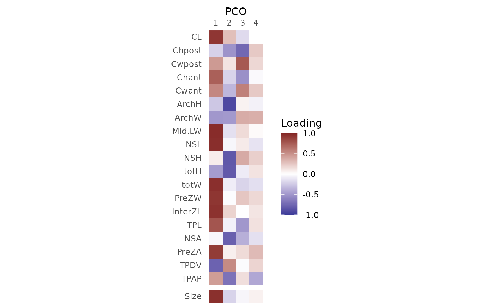

PCOload() computes the loadings for each principal coordinates (PCOs) analysis score, which are the correlations between the features used to compute the PCOs and the PCOs.
Usage
PCOload(x, scores)
# S3 method for class 'regions_pco_load'
plot(x, ...)Value
PCOload() returns a regions_pco_load object, which is a matrix with a column for each PCO score requested and a row for each variable in the original dataset; values indicate the correlation between each variable and each PCO score. plot() returns a ggplot object, which can be manipulated using ggplot2 syntax, that displays the loadings visually.
Details
the loadings for a constructed variable, vert.size, are also computed and displayed. This is computed as the mean of the features for each vertebra.
See also
svdPCO() for computing the PCOs; plot.regions_pco() for visualizing the correlations between PCO scores.
Examples
data("alligator")
alligator_data <- process_measurements(alligator,
pos = "Vertebra")
# Compute PCOs
alligator_PCO <- svdPCO(alligator_data)
# Compute PCO loadings
loadings <- PCOload(alligator_PCO, scores = 1:4)
loadings
#> - PCO loadings:
#>
#> PCO.1 PCO.2 PCO.3 PCO.4
#> CL 0.9214 0.2850 -0.17096 0.000379
#> Chpost -0.2163 -0.5189 -0.74326 0.240596
#> Cwpost 0.4554 0.1168 0.75907 0.175309
#> Chant 0.7288 -0.2063 -0.53556 -0.028160
#> Cwant 0.5402 -0.3457 0.57294 0.238653
#> ArchH -0.2635 -0.9168 0.05630 -0.065128
#> ArchW -0.4975 -0.4906 0.36905 0.357137
#> Mid.LW 0.9664 -0.1441 0.15972 0.021917
#> NSL 0.9580 -0.0427 0.09103 -0.127765
#> NSH 0.0773 -0.8326 0.37861 0.212040
#> totH -0.4753 -0.8241 -0.09257 0.121630
#> totW 0.9532 -0.0821 -0.20079 -0.150651
#> PreZW 0.9248 -0.0133 0.25234 0.171984
#> InterZL 0.9406 0.1956 -0.00413 0.114973
#> TPL 0.7768 -0.0630 -0.50157 0.132715
#> NSA -0.0383 -0.7876 -0.38165 -0.145363
#> PreZA 0.8968 0.0704 0.15874 0.304670
#> TPDV -0.7728 0.5232 -0.02010 0.189908
#> TPAP 0.4419 -0.6879 0.14413 -0.418512
#>
#> - Corr w/ vertebra size:
#>
#> PCO.1 PCO.2 PCO.3 PCO.4
#> vert.size 0.952 -0.207 -0.0441 0.0624
# Plot loadings
plot(loadings)
